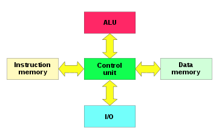
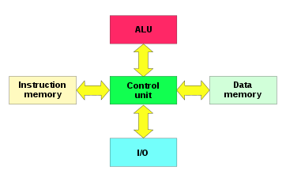
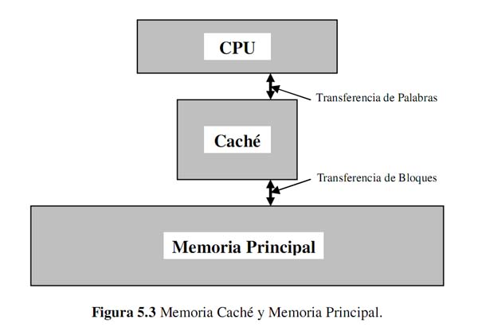

Unidad 1: Arquitecturas de Cómputo
1.1 Modelos de Arquitecturas de Cómputo
La arquitectura de una computadora es la especificación/descripción de la estructura y dinámica de este sistema computacional de manera abstracta, es decir, describe el sistema computacional de manera general. Adicionalmente, la palabra arquitectura, entendida como arte o disciplina, también aplica a la arquitectura de computadoras, siendo esta la disciplina de diseñar y crear los diseños lógicos y estándares para computadoras (tal como un arquitecto diseña y crea edificios).
1.1.1: Arquitecturas Clásicas
Las primeras computadoras fueron de programas fijos, es decir, de programas inherentes a su diseño
físico, mientras que las computadoras de programas almacenados, con base en ISAs, posibilitan almacenar programas (conjuntos de instrucciones) en la memoria, y,
por lo mismo, posibilitan crear programas para escribir programas.
Las primeras computadoras fueron de programas fijos, es decir, de programas inherentes
a su diseño físico, mientras que las computadoras de programas almacenados, con base
en ISAs, posibilitan almacenar programas (conjuntos de instrucciones) en la memoria, y,
por lo mismo, posibilitan crear programas para escribir programas.
Arquitectura Von Neumann
Es una arquitectura de computadoras que consiste en una unidad de procesamiento (abarca a la UC, la ALU y los registros
de procesador), una unidad de control (que abarca al registro de instrucciones y al contador de programas), memoria,
almacenamiento, y mecanismos de entrada/salida.
La característica distintiva es que la memoria, la cual es de acceso aleatorio, puede almacenar instrucciones y
datos, haciendo cualquier implementación de esta arquitectura una computadora de programas almacenados.

El cuello de botella de Von-Neumann:
Por compartir un mismo bus para los datos y las instrucciones, las computadoras que
siguen este modelo demuestran una limitación en la tasa de transferencia de datos entre el CPU y la memoria. Por lo
mismo, aunque mejore la memoria y el procesador de las computadoras, este cuello de botella limitará la velocidad de
procesamiento.
Soluciones:
- Proveer cache entre el CPU y la memoria principal (de manera que no se tienen que extraer los datos en cuestión de la memoria).
- Utilizar arquitecturas de múltiples buses y cachés especializados para instrucciones y para datos.
- Estrechar al CPU y a la memoria mediante chips de sistemas integrados.
Arquitectura Harvard
Es una arquitectura de computadoras similar a la Von-Neumann pero con secciones de memoria independientes para las instrucciones y los datos de la computadora, lo cual implica buses independientes correspondientemente. La versión modificada de esta arquitectura es la que actualmente domina el mercado.
 

Caché:
El acceso paralelo a instrucciones y datos en memoria puede potenciarse mediante caché de CPU.
En esta arquitectura, la memoria caché del CPU está dividida en memoria caché de instrucciones y de datos.
Arquitectura Harvard Modificada
Es la arquitectura de Harvard con la diferencia de que permite el acceso a las instrucciones como si estas estuvieran en la
memoria de datos. Aunque hay varios diseños modificados de la arquitectura de Harvard, en una en específico, se vuelven a juntar los espacios de direcciones de memoria pero
se conserva la independencia de las instrucciones y los datos al nivel del cache (estando este en un punto intermedio entre el CPU y la memoria).
De esta manera, la computadora puede actuar como una máquina Harvard original cuando ejecuta desde el cache y como una máquina von Neumann cuando ejecuta desde la memoria.
1.1.2: Arquitecturas Segmentadas
Es una técnica de implementación por la cual se solapa la ejecución de múltiples instrucciones.Hoy día, la segmentación es la técnica de implementación clave utilizada para hacer CPU rápidas. Consiste en la segmentación del procesador a lo que llamamos “pipeline”, descomponiendo en etapas para poder procesar una instrucción diferente en cada una de ellas y trabajar con variables a la vez
La segmentación es como una línea de ensamblaje: cada etapa de la segmentación completa
una parte de la instrucción. Como en una línea de ensamblaje de automóviles, el trabajo que va
a realizar en una instrucción se descompone en partes más pequeñas, cada una de las cuales
necesita una fracción del tiempo necesario para completar la instrucción completa. Cada uno
de estos pasos se define como etapa de la segmentación o segmento. Las etapas están
conectadas, cada una a la siguiente, para formar una especie de cauce las instrucciones se
entran por un extremo, son procesadas a través de las etapas y salen por el otro extremo.
La productividad de la segmentación está determinada por la frecuencia con que una
instrucción salga del cauce. Como las etapas están conectadas entre sí, todas las etapas deben
estar listas para proceder al mismo tiempo. El tiempo requerido para desplazar una instrucción,
un paso, a lo largo del cauce es un ciclo máquina. La duración de un ciclo máquina está
determinada por el tiempo que necesita la etapa más lenta (porque todas las etapas progresan
a la vez). Con frecuencia, el ciclo máquina es un ciclo de reloj (a veces dos, o raramente más),
aunque el reloj puede tener múltiples fases.
Tipos de cauces:
- Unifunción: ejecutan un único proceso.
- Multifunción: pueden ejecutar varios procesos:
- Estáticos: en un instante determinado sólo pueden ejecutar uno.
- Dinámicos: pueden ejecutar simultáneamente varios procesos.
- Lineal: a cada etapa sólo le puede seguir otra etapa concreta.
- No lineal: se pueden establecer recorridos complejos de las etapas.
Cosas a tener en cuenta:
- La segmentación no ayuda en la realización de una única tarea, ayuda en la realización de una carga de trabajo
- Se pueden realizar múltiples tareas simultáneamente utilizando diferentes recursos.
- La velocidad se incrementa si se aumenta el número de segmentos.
- La razón de segmentación está dada por el segmento más lento.
¿Qué lo hace tan fácil?
- Todas las instrucciones son del mismo largo
- Pocos formatos de instrucciones
- Los operandos con memoria solo aparecen en las instrucciones de carga y almacena.
¿Qué lo hace tan difícil?
Riesgos: Hay situaciones en la segmentación cuando la siguiente instrucción no se puede ejecutar en el próximo
ciclo de reloj.
Hay tres riesgos:
- Riesgos estructurales
- Riesgos de control
- Riesgos de datos
1.1.3: De multiprocesamiento
El multiprocesamiento es una tecnología que permite realizar múltiples tareas simultáneamente en un sistema informático. Esto se hace mediante el uso de
múltiples procesadores o núcleos de procesador que trabajan juntos para realizar tareas complejas. El multiprocesamiento se utiliza para mejorar el
rendimiento y la eficiencia en la realización de tareas, así como para manejar tareas grandes y complejas, como simulaciones de modelos, procesamiento de
grandes cantidades de datos y ejecución de aplicaciones con uso intensivo de gráficos.
Hay dos tipos principales de multiprocesamiento: multiprocesamiento simétrico (SMP) y multiprocesamiento asimétrico (AMP). En SMP, todos los procesadores son iguales y comparten la misma memoria y recursos, mientras
que en AMP, los procesadores tienen distintas capacidades y responsabilidades.
SMP (Symmetric Multi-Processing)
Es un tipo de arquitectura de computadoras donde dos o más unidades de procesamiento comparten una única memoria central. Los sistemas SMP permiten que cualquier procesador trabaje en cualquier tarea sin importar su localización en memoria. Cabe destacar que en esta clase de sistemas los distintos procesadores comparten el mismo bus de salida/entrada o ruta de datos.
Usos del SMP:
El SMP es usado principalmente en entornos de cómputo muy demandantes de recursos. Estos son entornos que requieren un gran potencial de procesamiento para
ejecutar aplicaciones, tareas y procesos. Estos ambientes pueden incluir:
- Servidores:
Los servidores a menudo utilizan el SMP para manejar grandes cantidades de tráfico de red y solicitudes de usuarios simultáneamente. - Sistemas de bases de datos:
Los sistemas de bases de datos a menudo utilizan sistemas SMP para mejorar el rendimiento y la escalabilidad. - Aplicaciones de cálculo intensivo:
Las aplicaciones que requieren muchos cálculos, como la simulación científica y la animación 3D, pueden aprovechar el sistema para completar las tareas más rápido - Sistemas de tiempo real:
Los sistemas que deben responder a eventos en tiempo real, como los sistemas de control de tráfico aéreo, a menudo utilizan el multiprocesamiento simétrico para asegurarse de que los tiempos de respuesta sean adecuados.
Características:
- Todos los procesadores tienen la misma prioridad.
- La memoria compartida es el modo de comunicación entre los procesadores
- Son complejos de manejar debido a que todas las unidades comparten la misma memoria y bus de datos
- El rendimiento del sistema puede mejorar al agregar más procesadores, lo que lo hace escalable a medida que las necesidades del sistema cambian.
- A diferencia de los sistemas asimétricos donde la tarea es hecha por un procesador maestro, las tareas son hechas individualmente por cada procesador
Ventajas:
- Mejor rendimiento: El uso de múltiples procesadores para correr tareas disminuye el tiempo para realizar una.
- Fiabilidad: Si un procesador falla, el sistema no va a fallar. Sin embargo la eficiencia se verá afectada.
- Mejor relación costo-rendimiento: SMP es menos caro a largo plazo, esto debido a que un sistema SPM comparten almacenamiento, fuentes de poder y otros componentes.
- Múltiples procesadores: Agilizan la carga al sistema.
Desventajas:
- Gasto de memoria: Debido a que todos los procesadores utilizan la misma memoria se necesita una memoria lo suficientemente grande que soporte los procesadores.
- Compatibilidad: Para que el SMP funcione el SO, programas y aplicaciones necesitan tener soporte a la arquitectura.
- SO complicado: El SO maneja todos los procesadores en un sistema SMP. Esto significa que el uso y manejo del SO puede ser complicado, ya que necesita hacerse cargo de todos los procesadores mientras realiza las tareas.
ASMP (Asymmetric Multi-Processing)
Es un modelo de multiprocesamiento donde no todos los procesadores tienen la misma prioridad. Por ejemplo un sistema puede permitir que solo un CPU ejecute código del sistema o puede permitir que solo un CPU se encargue de las operaciones I/O. El procesador encargado de manejar la memoria es conocido como “procesador maestro” así utilizando un sistema maestro-esclavo.
Usos del ASMP:
- Sistemas embebidos: En sistemas embebidos, la eficiencia de energía y la optimización de costos son críticos, el MAP permite que algunos procesadores se especializan en tareas específicas para mejorar la eficiencia.
- Sistemas de tiempo real: El AMP es adecuado para los sistemas de tiempo real, como los sistemas de control de tráfico aéreo, sistemas de navegación etc.
- Sistemas de multimedia: Los sistemas de multimedia pueden utilizar el AMP para especializar los procesadores en tareas como la codificación de audio y video.
- Sistemas de nube: El AMP es adecuado para sistemas de nube, donde se pueden asignar tareas específicas a diferentes procesadores para mejorar la escalabilidad y el rendimiento.
- Sistemas de bases de datos: Los sistemas de bases de datos pueden utilizar el AMP para especializar algunos procesadores en tareas específicas, como el procesamiento de consultas y la gestión de transacciones.
Características
- Especialización de procesadores: En el AMP, los procesadores tienen su propia capacidad y “especialidad”, lo que permite que sean más eficientes en sus tareas.
- Balanceo de carga: El SO equilibra la carga de trabajo entre los procesadores para garantizar un rendimiento óptimo.
- Flexibilidad: Al tener ciertos procesadores para tareas específicas el sistema es más flexible a la hora de ejecutar tareas y puede responder mejor a cambios en la carga de trabajo.
- Menor costo: Al utilizar procesadores con diferentes capacidades, el sistema puede ser más económico que un SMP ya que este requiere de procesadores iguales.
- Mejor eficiencia: Al tener tareas especializadas los procesadores se logra una mejor eficiencia a la hora de ejecutar aplicaciones.
1.2 Análisis de los componentes
1.2.1: Arquitecturas
Arquitectura de computadoras. Es el diseño y la organización de un sistema para un equipo de cómputo.
Es un modelo y descripción de cada función, así como los requerimientos y las implementaciones de diseño para varias partes del equipo de cómputo.
Principalmente enfocamos en la Unidad Central de Procesamiento lo conocemos como (CPU) el cual trabaja internamente y accede a las direcciones de memoria y a los sistemas de entrada salida, periféricos.
También suele definirse como la selección e interconexión de los componentes de hardware para crear computadoras según los requerimientos de funcionalidad, rendimiento y costo.
El equipo de cómputo recibe y envía la información a través de los periféricos por medio de los canales de distribución o buses (cableado físico de interconexión).
El CPU se encarga de procesar la información que le llega al equipo de cómputo. El intercambio de información se tiene que hacer con los periféricos y el CPU.
Todas aquellas unidades de un sistema exceptuando el CPU se denomina periférico, por lo que el equipo de cómputo
tiene dos partes bien diferenciadas, que son: el CPU (se encarga de ejecutar programas y que está compuesta por la memoria principal, la (ALU) Unidad Aritmética Lógica y la (UC) unidad de control) y los periféricos (que pueden ser de
entrada, salida, entrada-salida y las interconexiones).
1.2.1.1 Unidad Central de Procesamiento (CPU)
A grandes rasgos, controla el funcionamiento del computador y lleva a cabo sus funciones de procesamiento de datos. Frecuentemente se le llama simplemente procesador.
Funciones esenciales de la CPU:
- Captar instrucción: el procesador lee una instrucción de la memoria (registro, caché o memoria principal).
- Interpretar instrucción: la instrucción se decodifica para determinar qué acción es necesaria.
- Captar datos: la ejecución de una instrucción puede exigir leer datos de la memoria o de un módulo de E/S.
- Procesar datos: la ejecución de una instrucción puede exigir llevar a cabo alguna operación aritmética o lógica con los datos.
- Escribir datos: los resultados de una ejecución pueden exigir escribir datos en la memoria o en un módulo de E/S.
Para que el procesador cumpla sus funciones, necesita almacenar datos temporalmente de forma que recuerde la última instrucción para ir a la siguiente, de aquí surgen los registros.
1.2.1.2 Unidad Aritmético Lógica
La ALU es la parte del computador que realiza las operaciones aritméticas y lógicas con los datos. El resto de los elementos del computador (unidad de control, registros, memoria, E/S) están principalmente para suministrar datos a la ALU.
Por mucho, los circuitos electrónicos más complejos son los que están construidos dentro de los chips de microprocesadores modernos. Por lo tanto, estos procesadores tienen dentro de ellos un ALU muy complejo y potente. De hecho, un microprocesador moderno (y los mainframes)
puede tener múltiples núcleos, cada núcleo con múltiples unidades de ejecución, cada una de ellas con múltiples ALU.
La ALU se compone básicamente de: Circuito Operacional, Registros de Entradas, Registro Acumulador y un Registro de Estados, conjunto de registros que hacen posible la realización de cada una de las operaciones.
La mayoría de las acciones de la computadora son realizadas por la ALU. La ALU toma datos de los registros del procesador. Estos datos son procesados y los resultados de esta operación se almacenan en los registros de salida de la ALU. Otros mecanismos mueven datos entre estos registros y la memoria.
Una unidad de control controla a la ALU, al ajustar los circuitos que le señala a la ALU qué operaciones realizar.

1.2.1.3 Registros
- Los registros son las memorias más cercanas al procesador, son de acceso rápido y disponen de poca capacidad.
- Almacenan datos, comandos, instrucciones, entre otros.
- Los registros se miden en bits (entre 4 y 64).
1.2.1.4 Buses
Un computador está constituido por un conjunto de unidades o módulos de tres tipos elementales:
- Procesador
- Memoria
- Entrada y Salida (E/S)
Para que estos módulos trabajen en conjunto necesitan de algo llamado estructuras de interconexión.
El módulo de memoria se compone por palabras (entidades de bits) de una misma longitud que pueden representar números, instrucciones u otras cosas. Los módulos de E/S pueden leer y escribir datos con un dispositivo externo a través de una interfaz llamada puerto.
El módulo del procesador lee instrucciones y datos y escribe datos una vez procesados.
Las estructuras de interconexión se encargan de la comunicación de lectura y escritura entre estos tres módulos, las estructuras más usadas con diferencia son los buses, los cuales se comunican a través de varias líneas que transmiten señales binarias, así pues, un dato de 8 bits se transmite a través de 8 líneas.
1.2.2 Memoria
En informática, la memoria es el dispositivo que retiene, memoriza o almacena datos informáticos durante algún periodo de tiempo. La memoria proporciona una de las principales funciones de la computación moderna: el almacenamiento de información y conocimiento.
1.2.2.1 Conceptos básicos del manejo de la memoria.
Es un dispositivo qué puede almacenar dos tipos de valores estables en un periodo de tiempo Un dispositivo capaz de almacenar 1 bit se le conoce cómo celda basica de memoria Un dispositivo de memoria son un conjunto de celdas y circuitos asociados.
Él número de bits qué puede almacenar cada localidad se le conoce cómo ancho de la palabra y contiene un decodificador de direcciones.
1.2.2.2 Memoria principal semiconductora
En décadas pasadas se utilizaban núcleos de ferromagneticos (core) aunque hoy en día se utilizan de manera universal el uso de chips semiconductores.
Ram (Random Access Memory)
Memoria volátil la cual tiene la capacidad de leer y escribir datos de manera rápida Siempre debe de tener una fuente de poder, sí no los datos almacenados se perderán. Se divide en memoria dinámica DRAM y memoria estatica (SRAM).
ROM (Read Only Memory)
Contiene un patrón de datos permanentes. No se puede escribir en ella. Existen modelos de rom programables PROM cómo los EPROM y los EEPROM En las últimas dos décadas la memoria flash se ha hecho altamente popular en memorias USB, memorias de BIOS y Unidades de Estado sólido.
1.2.2.3 Memoria caché
Memoria de acceso rápido qué sirve de buffer entre él procesador y la memoria principal utilizada para reducir el tiempo de espera del procesador para leer los datos más usados o recientes qué se necesitan en el momento. Es una copia de la información qué se usó en cada proceso qué ha hecho el procesador.
1.2.3 Manejo de la entrada/salida
Una computadora no puede estar formada solo por un CPU y una memoria, para darle alguna utilidad debe de comunicarse con el mundo exterior a través del subsistema de entrada/salida (I/O input/output).
La misión principal del subsistema de E/S es adaptar los dispositivos externos antes de conectarlos al bus del sistema.
¿Por qué no se conectan directamente al bus del sistema?
- La velocidad de transmisión de datos de los periféricos es siempre menor que la de la memoria y la CPU.
- Debido a la gran diversidad de periféricos no es posible incorporar toda la lógica necesaria en el computador para manejar cada uno de éstos.
- Los formatos de datos de los periféricos son diferentes a los del resto de la computadora.
Funciones del Sistema de E/S
- DIRECCIONAMIENTO: selección del dispositivo correspondiente de entre los dispositivos disponibles en el sistema.
- SINCRONIZACIÓN: ha de posibilitar que la CPU y la memoria (alta velocidad transferencia de datos) se puedan comunicar con los dispositivos de E/S (baja velocidad) sincronizando los envíos de datos entre ambos.
- TRANSFERENCIA: el sistema E/S debe de tener toda la circuitería y señales de comunicación apropiadas para llevar a cabo la comunicación con cada uno de los dispositivos del sistema.
1.2.3.1 Módulos de entrada/salida
La E/S se implementa mediante dispositivos periféricos.
DISPOSITIVO PERIFÉRICO : Elemento que permiten la transferencia de información entre la CPU y el mundo exterior. Interfaz que traduce la información asíncrona y analógica del mundo
exterior a la información síncrona y codificada del computador.
Dos partes: módulo de E/S y dispositivo (externo).
Coordina el correcto flujo de información entre uno o varios dispositivos externos (impresora, monitor, ...) e internos (memoria, procesador).
Funciones:
- Reconocer la dirección de la CPU que identifica al dispositivo externo.
- Transferencia de datos entre el CPU y el dispositivo externo.
- Recepción comandos desde el CPU.
- Mantener información del estado del periférico y mantener el protocolo de comunicaciones con el periférico.
Un módulo de E/S puede controlar varios dispositivos externos.
1.2.3.2 Entrada/Salida programada
- El CPU tiene el control absoluto de la operación de E/S: inicia y lleva a cabo la transferencia.
- La CPU está dedicándose por completo a realizar la operación de E/S: realiza tanto la comprobación de estado como la transferencia y la inicialización: poco eficiente.
- Hardware mínimo.
1.2.3.3 Entrada/Salida mediante interrupciones
La E/S le indica al CPU cuando está preparada para transferir datos (genera una interrupción al CPU), activando una línea especial conectada al CPU (línea de interrupción).
Funcionamiento:
1. El procesador ejecuta instrucciones de un programa. Al finalizar cada instrucción comprueba si se ha producido una interrupción.
2. En caso afirmativo se salva el estado actual del programa (contador del programa y registros) y se salta a ejecutar la rutina de servicio correspondiente.
3. La rutina de servicio efectúa las operaciones apropiadas en la E/S para realizar la transferencia de datos solicitada.
4. Al finalizar la rutina de servicio se recupera el estado de la CPU y se continúa ejecutando el programa que se estaba ejecutando antes de la interrupción.
Las interrupciones pueden ser:
- ENMASCARABLES (se pueden dejar de atender por software)
- NO ENMASCARABLES (siempre atendidas).
Dos formas de conocer la dirección/posición (vector) donde se encuentra la rutina de servicio de la interrupción:
- Vector de interrupciones siempre FIJO
- El periférico suministra el vector de interrupción.
Generalmente existen VARIOS PERIFÉRICOS (y no uno sólo) conectados que pueden realizar interrupciones, esto obliga a ESTABLECER PRIORIDADES y decidir cómo se conectan a la CPU. También hay que determinar para cada periférico su vector de interrupciones.
1.2.3.4 Acceso directo a memoria
El DMA (Direct Memory Access) es un procesador/controlador especializado en transferencias “muy grandes” desde periféricos a memoria y viceversa.
Es programable. La CPU no realiza ninguna tarea (salvo programar el DMA) ya que la inicialización y transferencia son gobernadas por el periférico.
Para programar el DMA hay que enviarle al menos los siguientes datos:
- Dirección/puerto periférico E/S.
- Posición/dirección en memoria principal.
- Tamaño (número de bytes a transferir).
- Tipo transferencia: lectura o escritura.
Al finalizar el DMA avisa mediante una interrupción.
Esta interrupción al igual que el resto de interrupciones son normalmente atendidas al final de cada instrucción.
La rutina de servicio asociada comprobará el estado del DMA para ver si se han producido errores al ejecutar la transferencia que se le ha encomendado.
1.2.3.5 Canales y procesadores de E/S
La siguiente evolución en los sistemas de E/S: tener un procesador capaz de interpretar secuencias de operaciones y de esa forma tener bajo su control un mayor número de operaciones y módulos de E/S, cada vez más complejas.
El canal de E/S es un “pequeño” procesador especializado en operaciones de E/S. Si además tiene memoria propia, entonces se lo llama procesador de E/S.
Para realizar una transferencia de E/S, la CPU primero ha de indicar qué canal de E/S ejecuta un determinado programa.
La CPU también debe definir el área de almacenamiento temporal, establecer una prioridad y establecer las correspondientes acciones en caso de error.
El programa a ejecutar está cargado en memoria principal y puede contener instrucciones propias sólo procesables por el canal de E/S.
Después de terminar la operación de E/S, el canal de E/S deja el resultado en un área de memoria y a continuación genera una interrupción para indicar que ha acabado.
1.2.4 Buses
1.2.4.1 Tipos de buses
- En paralelo:
Es un bus en el cual los datos son enviados por bytes al mismo tiempo, con la ayuda de varias líneas que tienen funciones fijas. - En serie:
En este los datos son enviados de bit a bit y se reconstruyen por medio de registros o rutinas de software.
1.2.4.2 Estructura de los buses
- LÍNEAS DE DATOS: Caminos para transferir datos entre el resto de componentes de un computador.
- LÍNEAS DE DIRECCIONES: Designan la posición/dirección de los datos.
- LÍNEAS DE CONTROL: Controlan el acceso y uso de los buses anteriores.

1.2.4.3 Jerarquía de buses
1.2.5 Interrupciones
Una interrupción (del inglés Interrupt Request, también conocida como petición de interrupción) es una señal recibida por el procesador de un ordenador, indicando que debe "interrumpir" el curso de ejecución actual y pasar a ejecutar código específico para tratar esta situación.
Una interrupción es una suspensión temporal de la ejecución de un proceso, para pasar a ejecutar una subrutina de servicio de interrupción.
No forma parte del programa, sino que pertenece al sistema operativo o al BIOS). Una vez finalizada dicha subrutina, se reanuda la ejecución del programa.
Interrupciones de Hardware
- Division por cero
- “Ejecución paso a paso”
- “No enmascarable”
- “Punto de ruptura”
- “Desbordamiento”
- “Dispositivo no disponible”
Interrupciones de Software
Son aquellas generadas por un programa en ejecución.
- “Interrupciones de la BIOS
- “Interrupciones de DOS”
- “Interrupción de Dato Exterior”